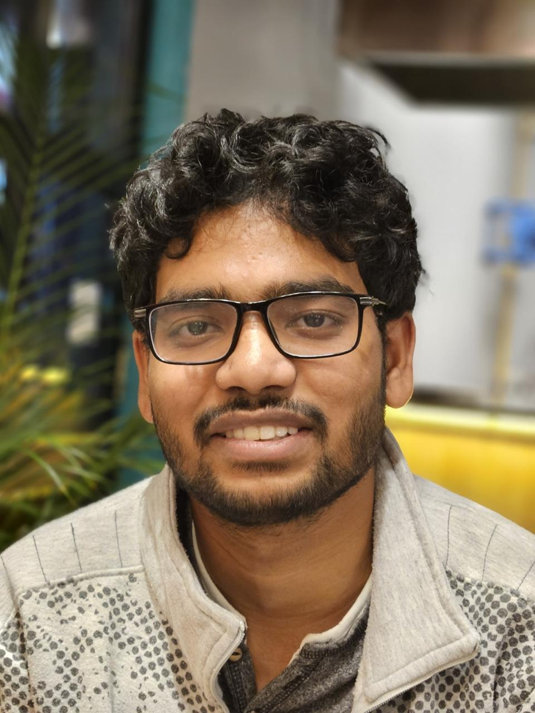

Bikram Pain
Ph.D. Candidate · International Centre for Theoretical Sciences , Bengaluru
I am a Ph.D. student in my pre-final year at ICTS, advised by Dr. Sthitadhi Roy. I am also a Fulbright-Nehru Doctoral Research Fellow at the University of Texas at Austin, where I am working with Dr. Matteo Ippoliti. My research sits at the interface of non-equilibrium quantum dynamics, quantum chaos, and ergodicity in many-body systems.
Research
Interests
My work explores fundamental questions about how quantum many-body systems explore their state space, thermalize, and fail to do so.
Non-equilibrium Dynamics
Entanglement growth, information spreading, and transport in driven and disordered quantum systems.
Quantum Chaos & Ergodicity
Spectral statistics, Krylov complexity, and the eigenstate thermalization hypothesis.
Many-body Localisation
Eigenstate correlations, entanglement structure, and dynamical signatures in the MBL phase.
Random Matrix Theory
Level statistics, correlation functions, and connections to quantum chaotic dynamics.